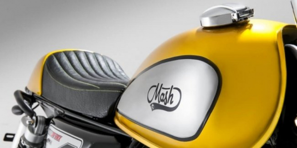
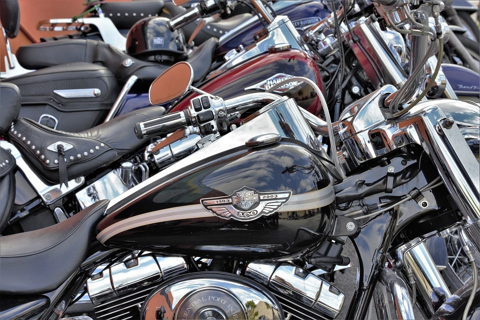

VMmoto.lt – Motociklų ir keturračių remontas
 Titulinis Apie mus Mūsų paslaugos Motociklų remontas Motorolerių remontas Keturračių remontas Parduotuvė PRIEŽIŪRA Granatos Granatų apsauginės gumos Kryžmės Oro filtrai Pusašiai ŠARNYRAI Tepalo filtrai Vairo traukės Vairo traukių antgaliai Variatorių diržai AKSESUARAI Sniego valytuvai Bamperiai Daiktadėžės Dugno apsaugos Gervės ir priedai APRANGA Dragonfly Šalmai AGRO AURORA LED Alyvos MOTOREX alyva MOTUL alyva Keturračiai MOTOCIKLAI Padangos Kontaktai Titulinis Apie mus Mūsų paslaugos Motociklų remontas Motorolerių remontas Keturračių remontas Parduotuvė PRIEŽIŪRA Granatos Granatų apsauginės gumos Kryžmės Oro filtrai Pusašiai ŠARNYRAI Tepalo filtrai Vairo traukės Vairo traukių antgaliai Variatorių diržai AKSESUARAI Sniego valytuvai Bamperiai Daiktadėžės Dugno apsaugos Gervės ir priedai APRANGA Dragonfly Šalmai AGRO AURORA LED Alyvos MOTOREX alyva MOTUL alyva Keturračiai MOTOCIKLAI Padangos Kontaktai Titulinis Apie mus Mūsų paslaugos Motociklų remontas Motorolerių remontas Keturračių remontas Parduotuvė PRIEŽIŪRA Granatos Granatų apsauginės gumos Kryžmės Oro filtrai Pusašiai ŠARNYRAI Tepalo filtrai Vairo traukės Vairo traukių antgaliai Variatorių diržai AKSESUARAI Sniego valytuvai Bamperiai Daiktadėžės Dugno apsaugos Gervės ir priedai APRANGA Dragonfly Šalmai AGRO AURORA LED Alyvos MOTOREX alyva MOTUL alyva Keturračiai MOTOCIKLAI Padangos Kontaktai
Prekyba - dalys - servisas MOTOCIKLŲ IR KETURRAČIŲ Remontas Remontuojame visų tipų motociklus ir keturačius, teikiame konsultacijas. Profesionalūs meistrai, turintys ilgametę darbo patirtį greitai ir tiksliai nustatys motociklo ar keturačio gedimus. Atliktiems darbams suteikiama garantijas. Mūsų kontaktai C r u i s e r Prekyba dalimis
Didmeninė ir mažmeninė prekyba visų tipų moto dalimis
Prekyba motociklų detalėmis elektroninėje parduotuvėje. Kilus klausimams ar prireikus patarimo visada esate laukiami
Detaliau Play Remonto rūpesčius palikite mums Mėgaukis
kelionėmis
VMMOTO Remontuojame visų tipų motociklus
Tepalų, Filtrų keitimas
Naudojame tik kokybiškus ir sertifikuotus tepalus, filtrus
01Profesionali tiksli diagnostika
Diagnostika atliekame naudojant tik profesionalią diagnostinę įrangą
02Variklių remontas, Galios didinimas
Atvykite apžiūrai ir mes padarysime viską, kad variklis dirbtu nepriekaištingai.
03Stabdžių sistemos remontas
Tvarkinga stabdžių sistema yra vienas svarbiausių jūsų saugumo elementų.
04Greičių dėžių remontas
Greičių dėžes remontuojame patys, nevežame kitų servisų meistrams
05Elektros instaliacijos remontas
Motociklų elektros gedimų paieška ir šalinimas, diagnostika
06Motociklo paruošimas sezonui
Po žiemos norėdami išvažiuoti į gatves, nepamirškite tam paruošti savo motociklą
07Pilna rekonstrukcija po avarijos
Naudojame TIK kokybiškas medžiagas ir tik patikimus, kokybiškus metodus
08essay writing service reviews
essay writer service
VMMOTO
Mes – motociklų, keturračių ir motorolerių remonto srities specialistai, rinkoje esame daugiau kaip 10 metų. Įmonė „VM MOTO“ kokybiškai suremontuos jūsų motociklą atliks išsamią diagnostiką.
I-V: 9:00 18:00; VI-VII: NEDIRBAME
MŪSŲ PASLAUGOS
Tepalų, Filtrų keitimas
Diagnostika
Variklių remontas
Stabdžių sistemos remontas
Motociklo paruošimas sezonui
MŪSŲ KONTAKTAI
Savanorių pr. 174R, LT-03153 Vilnius +370 677 89771 info@vmmoto.ltCOPYRIGHT 2020 © IBS
VMMOTO
Mes esame išskirtiniai tuo, kad užtikriname aukštus motociklų remonto ir aptarnavimo standartus.
Bet tai tik žodžiai, susisiekite su mumis ir mes įrodysime, kad esame profesionalai !
Dėkojame, kad domitės mūsų paslaugomis !
Mūsų kontaktai
Pirmadienį – Penktadienį: 9:00 - 18:00 Šeštadienį–Sekmadienį: NEDIRBAME Savanorių pr. 174R, LT-03153 Vilnius +370 677 89771 info@vmmoto.lt